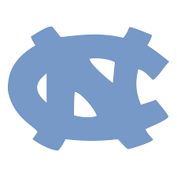
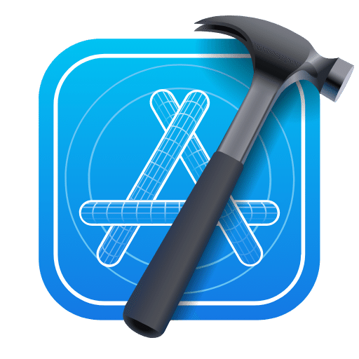
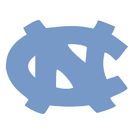
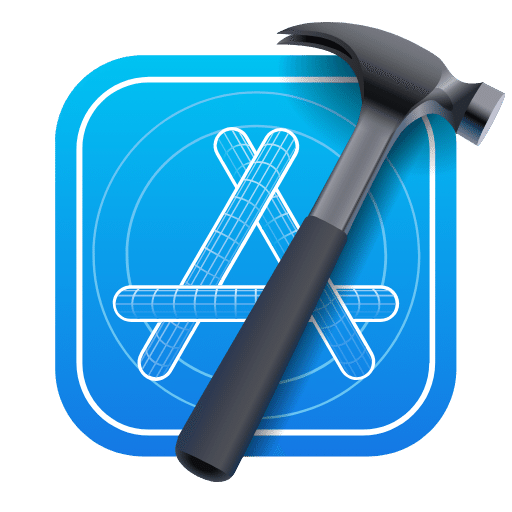
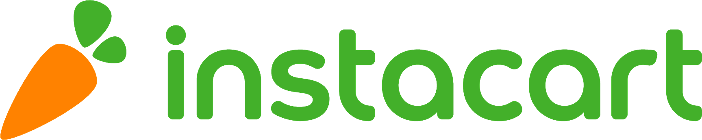
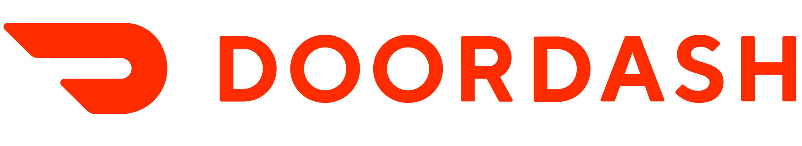

Who am I?
Hey! I'm Zabdiel Villalobos, but just call me Zab. I was born in Venezuela 🇻🇪 but raised in Winston-Salem, North Carolina. I'm currently a junior at UNC-Chapel Hill studying CS, where I'm focused on building tech that's not just functional but meaningful and accessible. My journey into tech started in my car, delivering groceries with  and takeout with  as a high school senior trying to save up for a gaming PC. Using those apps opened my eyes to the impact that thoughtful, user-centered design can have when it comes to making everyday tools feel effortless and inclusive. That sparked my passion for creating intuitive mobile apps and clean, purposeful code.